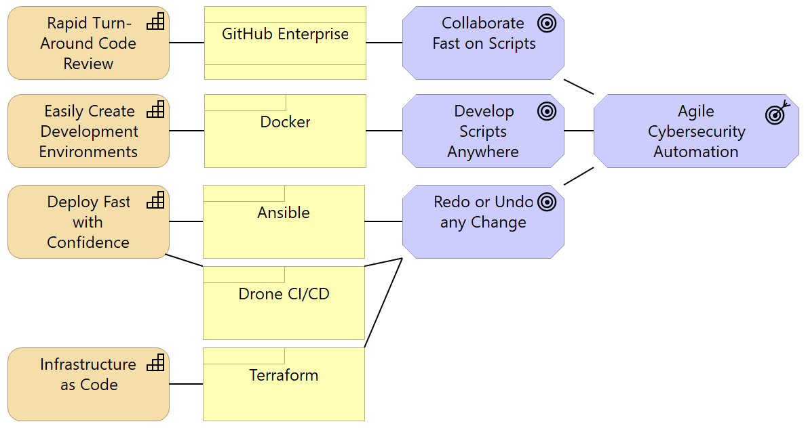

### The Evolving SecOps Script Environment  --- ### Why Change our Script Environment? - The Goal: **Agile Cybersecurity Automation**. - The talent on this team merits a platform that can keep pace. --- ### Demo - Get a DEV copy of settings.ini. - Run the commands: ```powershell choco install docker-desktop choco install make make build make shell ``` - use `brew` instead of `choco` on Apple. - use `apt-get` instead of `choco` on Linux. --- ### What's New? - **GitHub Enterprise** provides a collaboration platform around Git that increases visibility into solutions and reduces time costs of developing solutions. - **Docker** is going to let us to each have a functioning development environment on our local laptop. This currently takes 4 commands. - **Ansible** is a good enough repeatable way to deploy Python code versioned in git to the server, and we've solved a similar need with it before within SDG. One or several pip packages is a possibility, but is not critical at this time. - **Drone CI/CD** will be setup to automatically deliver code changes to production. - **Terraform** will be critical later when we start deploying to the cloud. --- ### On the Horizon - Deliver Cybesecurity automation where we want it - i.e. Splunk. - The **Cybersecurity Team** will be asked to make changes using `git` and `pull requests`. - Adding a `pull request` does add a delay to the release cycle. The typical delay on my team has been **6 minutes**. You do *not* have to stop working while you wait. --- ### Next Week - **Cybersecurity Incident Responders** will, for now, continue to log into the production host to run the production scripts. - ***It will become possible to lose work if you make changes only on production.*** - The legacy DEV and TEST servers will eventually be less functional than the new Docker environments we are providing. - Any `master` branch in GitHub that drives a deployment pipeline will be configured to reject direct changes. You will have to use a `pull request`. --- ### What to do now? - Read `Pull Requests` that you see linked in the SecDevOps channel. - Participate in discussion in the SecDevOps channel. - Bring your scripting headaches to the SecDevOps channel. --- ### Take the Lead - Give the Docker DEV environment a try. - Read some Git resources. - Collaborate with SecDev to create your first `pull request`. --- ### Resources - [Software Carpentry Git Traininig](https://swcarpentry.github.io/git-novice/) - Diagrams were created in [Archi - Open Format](https://www.archimatetool.com/download/). See `SecOps.archimate` file for diagram source. Image was done via Snipping tool.